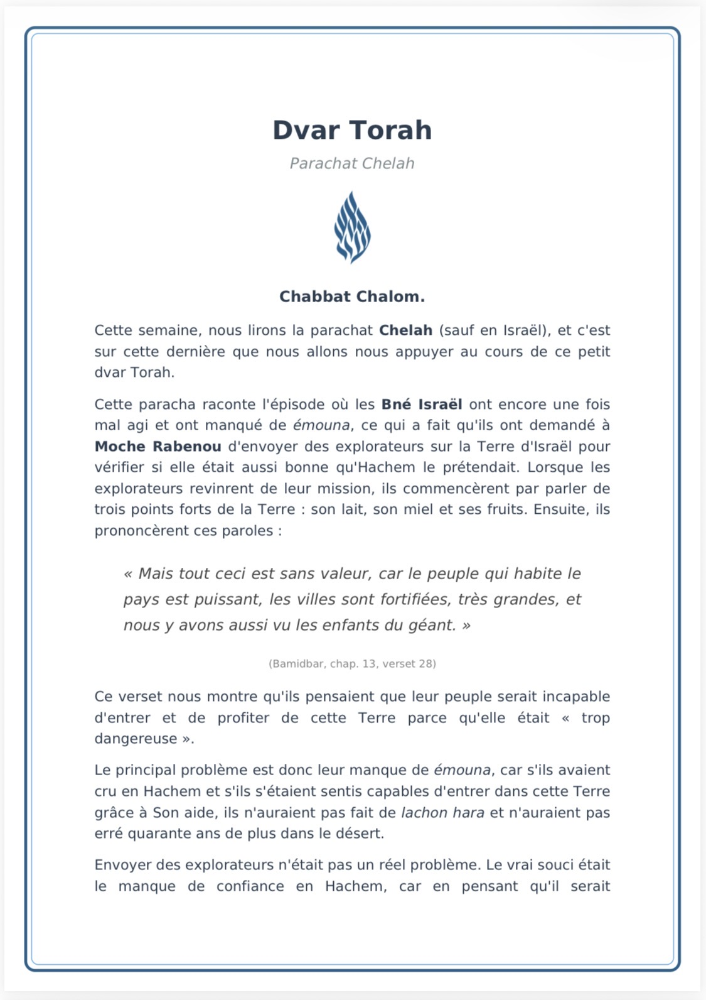
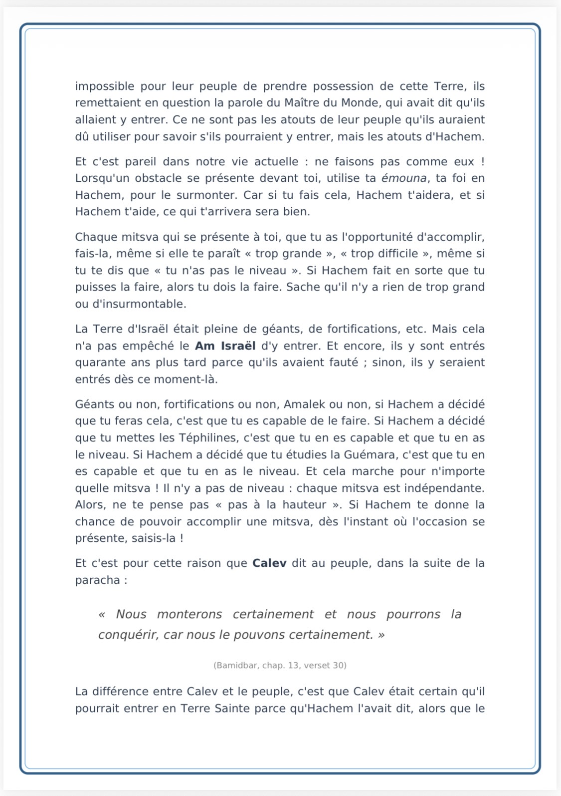
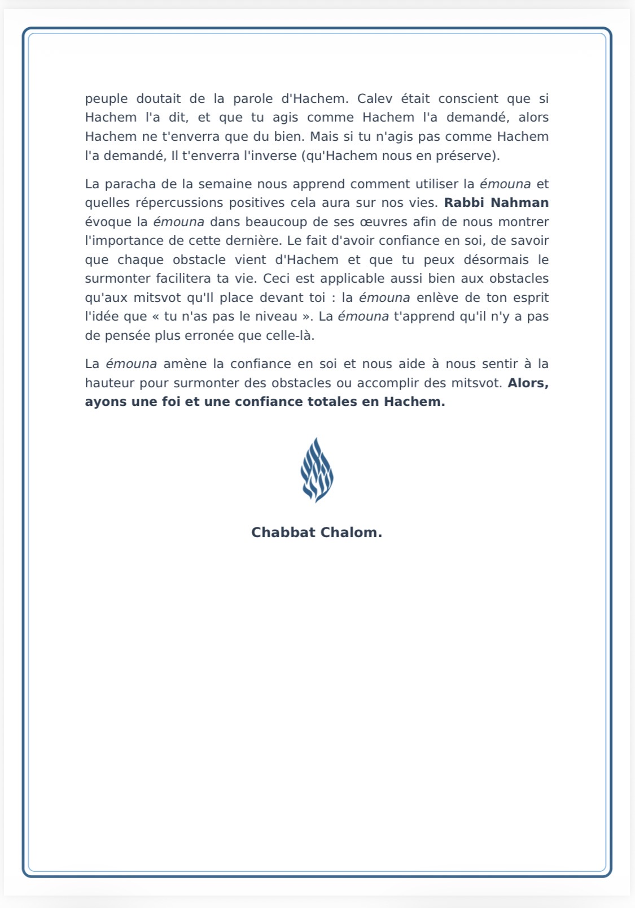
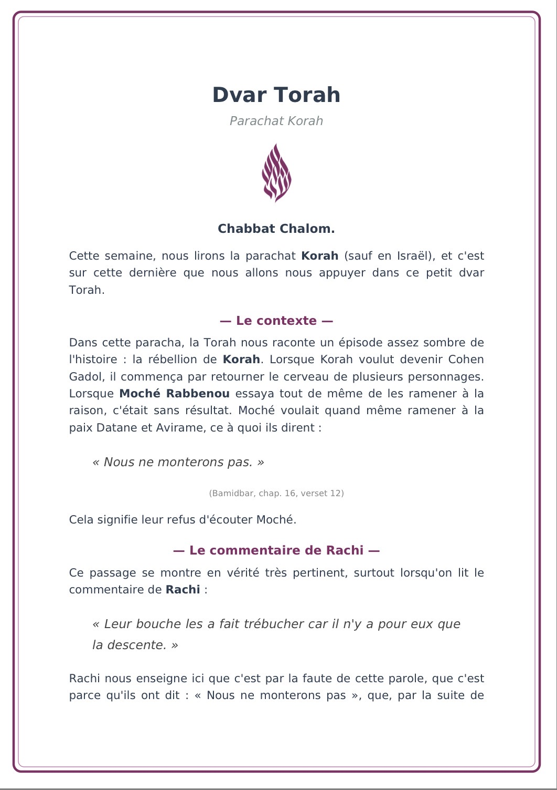
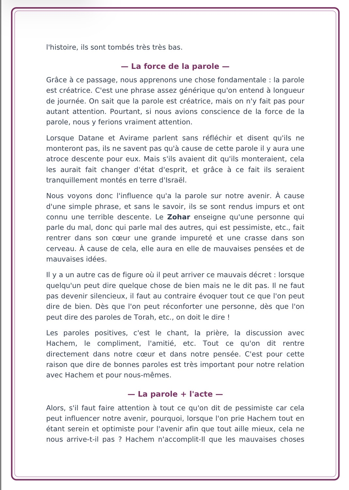

« Heureux sommes-nous, combien notre sort est agréable. »
Likouté Tefilot 24
✨ Nouveau cette semaine
Explorer Bitahon
📱 Recevoir les nouveautés
Pour recevoir les nouveaux Divré Torah et les nouveautés Bitahon :
Recevoir sur WhatsApp📖 Tikoun Haklali
לפני אמירת תיקון הכללי
הֲרֵינִי מְזַמֵּן אֶת פִּי לְהוֹדוֹת וּלְהַלֵּל וּלְשַׁבֵּחַ אֶת בּוֹרְאִי לְשֵׁם יִחוּד קֻדְשָׁא בְּרִיךְ הוּא וּשְׁכִינְתֵּה בִּדְחִילוּ וּרְחִימוּ עַל יְדֵי הַהוּא טָמִיר וְנֶעְלָם בְּשֵׁם כָּל יִשְׂרָאֵל:
הֲרֵינִי מְקַשֵׁר עַצְמִי בַּאֲמִירַת הָעֲשָׂרָה מִזְמוֹרִים אֵלּוּ לְכׇל הַצַּדִּיקִים הָאֲמִתִּיִּים שֶׁבְּדוֹרֵנוּ. וּלְכׇל הַצַּדִּיקִים הָאֲמִתִּים שׁוֹכְנֵי עָפָר. קְדוֹשִׁים אָשֵׁר בָּאָרֶץ הֵמָּה. וּבִפְרָט לְרַבֵּנוּ הַקָּדוֹשׁ צַדִּיק יְסוֹד עוֹלָם נַחַל נוֹבֵעַ מְקוֹר חׇכְמָה רַבֵּנוּ נַחְמָן בֶּן פֵיגֶא. זְכוּתָם יָגֵן עָלֵינוּ וְעַל כָּל יִשְׂרָאֵל אָמֵן.
Psaume 150
לאחר אמירת תיקון הכללי
וּתְשׁוּעַת צַדִּיקִים מֵיְיָ, מָעוּזָּם בְּעֵת צָרָה:
וַיַּעְזְרֵם יְיָ וַיְפַלְּטֵם, יְפַלְּטֵם מֵרְשָׁעִים וְיוֹשִׁיעֵם כִּי חָסוּ בוֹ:
🎼 Likouté Tefilot
💡 À savoir :
Ces Téfilot sont certes facultatives, mais elles sont extrêmement puissantes.
Il est tout à fait possible d'y ajouter ses propres mots ou d'en retirer certaines parties selon ses besoins.
On peut parfois penser ne pas avoir le temps, mais même réciter uniquement le début ou quelques lignes de ces Téfilot est déjà très bénéfique. Et les lire entièrement ne prend généralement qu'environ cinq minutes.
Alors, plus d'excuses ! 😊
Toutefois, il vaut mieux lire seulement une partie avec une véritable concentration et un cœur sincère, plutôt que de tout réciter rapidement en pensant à autre chose.
Likouté Tefilot 1
Likouté Tefilot 2
Likouté Tefilot 3
🎼 Likouté Tefilot 1
De la sorte, Tu m’accorderas le mérite, dans Ta grande bienveillance, que le mauvais penchant et le souffle de folie n’aient aucun pouvoir, pour troubler mon esprit, en me faisant négliger, à D.ieu ne plaise, Ton service sincère, à cause de ses Mitsvot, lorsqu’il s’habille dans de bonnes actions, comme s’il m’incitait à une certaine Mitsva, alors qu’il dissimule en elle un piège sous mes pas, à D.ieu ne plaise, par le biais de ses Mitsvot dans lesquelles il se revêt. Toi seul, Tu sais de tout cela. Je T’en prie, ô D.ieu, ménage et épargne mon âme malheureuse, sauve-moi de lui, de ses mauvais conseils, afin qu’il n’ait pas la force de m’égarer, à D.ieu ne plaise, par ces confusions. Me voici [prêt] à jeter tout mon fardeau sur Toi, ô mon D.ieu et D.ieu de mes pères, et je m’appuie sur Toi seul. C’est Toi qui me conduiras, dans Ta grande bienveillance, sur un chemin empreint de droiture et de vérité, à tout moment et à toute heure, à travers chacun de mes gestes, de sorte qu’ils se conformeront tous à Ton bon désir, et je ne me détournerai pas de Ta volonté, ni à droite, ni à gauche. En effet, Tu sais, Toi, que nous sommes des êtres de chair et de sang, et qu’il nous est très sincèrement impossible d’avoir à tout moment à l’esprit Ton bon désir. C’est pourquoi, aide-moi, dans Ton abondante miséricorde, à ce que le mauvais penchant, le souffle de folie et la démence, n’aient pas la force de troubler encore mon esprit, à travers n’importe quelle perturbation existant au monde. Que j’aie seulement le mérite de m’appuyer sur Toi seul, alors que Toi, Tu auras pitié de moi, dans Ta grande bienveillance. Tu me conduiras et Tu me feras toujours cheminer, sur la voie de la vérité, à tout moment et à chaque instant, de manière à ce que toutes mes actions, mes affaires et tous mes mouvements, ainsi que les gestes de mes enfants, de ma descendance, et de tous ceux qui dépendent de moi, soient entièrement, uniquement, constamment, conformes à Ton bon désir, dès maintenant et à jamais. Ainsi, Tu me viendras en aide, dans Ton abondante miséricorde, de sorte que je parvienne à conférer de la force au Royaume de sainteté, afin qu’il prenne l’avantage sur le Royaume mécréant, et je mériterai de renforcer le bon penchant sur l’inclination au mal. Favorise-moi, dans Ta grande bienveillance, et épanche sur moi la sagesse et l’intelligence de sainteté, pour que je réussisse à voir, en toute chose, la lumière de l’intelligence de sainteté qui l’habite, afin de me coller à D.ieu béni soit-Il, grâce à toutes les choses qui existent dans le monde. J’aurai le privilège de comprendre à partir d’elles toutes, les allusions que Tu me signales, à tout moment, afin de me rapprocher de Toi. Ainsi, que telle soit Ta volonté, [Toi qui es] rempli de faveur, rempli de miséricorde, rempli de bonté, rempli de bien, à tout moment, à chaque instant, en permanence, de me ménager, de m’épargner, et d’épancher sur moi la grâce et la bonté. Tu me feras trouver grâce à Tes yeux, et aux yeux de tous ceux qui me voient, et Tu me fourniras des paroles empreintes de grâce et d’implorations, de manière à ce que mes paroles s’introduisent dans Ton cœur. Tu exauceras toujours ma prière et ma requête, et Tu accompliras le verset de l’Ecriture : « Je déverserai sur la maison de David et sur l’habitant de Yérouchalayim un esprit de grâce et d’implorations ». Nous aurons ainsi le mérite que nos paroles [émises] devant Toi soient des paroles de grâce et d’implorations, de manière à ce que Tu leur accordes une place pour pénétrer dans Ton cœur, et nos dires procureront agrément et apaisement devant le trône de Ta gloire.
Maître du monde, contemple notre misère, vois notre abaissement et le mépris dont nous sommes l’objet. En effet, toute la grâce et le prestige d’Israël Ton peuple saint, sont tombés au sein de cet exil amer, alors que Ton peuple Israël est méprisé et rabaissé aux yeux des nations idolâtres et des méchants. Toute la grâce et le prestige sont tombés chez eux. C’est pourquoi, selon l’abondance de Ta miséricorde, ménage, je T’en prie, Ta grande et sainte gloire, élève, rehausse et fais croître la grâce et le prestige d’Israël, au niveau matériel et spirituel. Supprime et soumets la grâce et le prestige des peuples idolâtres, de l’Autre côté et des méchants, de sorte qu’ils ne possèdent ni grâce ni notoriété, en haut comme en bas. Rehausse la gloire d’Israël, écoute et fais bon accueil de notre prière et de notre soupir en tout temps, vois notre labeur et discerne notre misère et notre gêne. Accomplis le verset de l’Ecriture : « Car Il ne dédaigna pas ni ne prit en aversion la misère du pauvre, Il ne lui dissimula pas Sa Face, et Il entendit quand il L’implora ». Fais-nous grâce, réponds-nous et entends notre prière, car Tu écoutes la prière de toute bouche, parmi Ton peuple Israël, dans la miséricorde. Béni sois-Tu, qui entends la prière.🎼 Likouté Tefilot 2
Fais-le pour Toi et non pour nous, car l’infime parcelle de nos bonnes actions, toutes nos œuvres charitables et notre prière, absolument tout provient de Toi, et ce qui est issu de Ta main, nous Te le donnons, et ainsi qu’il est écrit : « Qui M’a précédé pour que Je le paie ? ». Non pour nous, ô E.ternel, non pour nous mais bien pour Ton Nom, fais honneur à Ta bonté et à Ta vérité. Fais-moi vivre selon Ta bonté, et j’observerai le témoignage de Ta bouche. Accomplis pour nous le verset de l’Écriture : « En faveur de Mon Nom, Je ferai patienter Ma colère et [en vertu] de Ma louange, Je la retiendrai pour toi. C’est pour Moi, c’est pour Moi que Je le ferai, car comment [Mon Nom] serait-il profané ? Ma gloire, Je ne la prête à aucun autre ». C’est Lui qui accroît les délivrances de Son roi et qui agit avec bonté envers Son oint David et sa postérité, à jamais, amen Sélah !
🎼 Likouté Tefilot 3
Que Ta volonté, E.ternel notre D.ieu et D.ieu de nos pères – Lui qui a fait choix des cantiques chantés – soit de Te rappeler, dans Ta bienveillance et Ta grande bonté, de Ta puissante Chékhina [NdT : littéralement « la Présence de Ta force »], qui a erré, loin de Son lieu, tel un oiseau qui vagabonde, hors de son nid. « Tu Te lèveras, Tu prendras Tsion en pitié : il est temps de lui faire grâce, car le moment est venu ». Etablis et relève de sa chute l’assemblée d’Israël. Aide-nous, dans Ton abondante miséricorde, à ce que nous méritions d’élever le son musical, afin que nous ayons la force d’arranger, devant Toi, des chants, des cantiques et des louanges, avec une voix empreinte d’allégresse et de joie. Nous jouerons nos mélodies, tous les jours de notre vie, d’une voix agréable et douce, comme Tu [les] aimes. Aide-nous à étudier constamment Ta sainte Torah, jour et nuit, de façon désintéressée.
De même que Tu as remis Ta sainte Torah à Moché Ton serviteur – durant le jour, Tu étudiais avec lui la Torah écrite, et durant la nuit la Torah orale – ainsi tu nous porteras assistance, dans Ta grande bienveillance, afin d’apprendre et de méditer sur Ta sainte Torah en permanence, de sorte que nous parviendrons à étudier jour et nuit la Torah écrite et la Torah orale. Maître du monde ! Dans Ton abondante miséricorde, accorde-nous la force de l’emporter sur le sommeil, afin que nous puissions chasser le sommeil de nos yeux, pour étudier en permanence, chaque nuit, les soixante traités [du Talmud], accompagnés de la sainte Guémara, dans le but d’apprendre, d’enseigner, d’observer, d’accomplir, de mettre en pratique et de nous consacrer à leur étude, de façon désintéressée. « Lève-toi, chante pendant la nuit, au début des veilles ». Un fil de bonté s’étendra sur nous, par cette démarche. « Le jour, l’E.ternel donnera ordre à Sa bonté, alors que la nuit, Son chant est avec moi, une prière au D.ieu de ma vie ». Grâce à cela, Tu nous viendras en aide, de façon à ce que l’écoute de la voix chantée d’aucun homme au monde, ne nuise à notre dévotion. Que même les sons altérés en provenance des « oiseaux pris au piège » n’aient pas la force de nous porter atteinte, en nous troublant de notre service, à D.ieu ne plaise. Donne-nous uniquement la force de les élever, de les raffiner, de les redresser et de les faire revenir à la sainteté, et Tu érigeras la Souca chancelante de David. Dans Ta grande bienveillance, que s’éveille le narcisse du Charon, et qu’il se mette à chanter d’une voix mélodieuse, dans l’entrain et l’allégresse. Tu règneras Toi seul rapidement, E.ternel, sur toutes Tes œuvres, et que s’accomplisse le verset de l’Ecriture : « Chantez [pour] D.ieu ! Chantez pour notre Roi, chantez, car D.ieu est le Roi de toute la terre, entonnez un Maskil ! » [NdT : un « Maskil » est un type de Psaume ayant pour but d’éclairer le peuple sur quelque chose de précis]. Souviens-Toi de Ton peuple Israël, dispersé parmi les nations, et de Ton Temple désolé, privé de ses occupants. « Même l’oiseau a trouvé un gîte, l’hirondelle possède un nid, dans lequel elle a déposé ses oisillons. J’ai la nostalgie de Tes autels, ô D.ieu des armées, ô mon Roi et mon D.ieu ! ». Ramène les Cohanim à leur tâche, les Lévites sur leur estrade, à leur cantique et à leur chant, et réinstalle Israël dans sa demeure. Fais-nous don de l’intelligence et de la sagesse de sainteté, afin de parvenir à attirer en permanence sur nous le joug de Ton Royaume, de dévoiler Ta Royauté et Ta souveraineté sur tous les habitants du monde. Instaure rapidement le trône de David, amène-nous vite, sans plus tarder, le Machia’h fils de David, le [poète] plaisant des chants d’Israël. « Alors notre bouche se remplira de rire, et notre langue, de chant ». Nous nous répandrons alors en cantiques, nous chanterons et nous entonnerons [des airs joyeux], devant Toi, durant toute notre vie, et s’accomplira le verset de l’Ecriture : « L’E.ternel [se manifeste] pour nous sauver », et nous entonnerons mes mélodies, tous les jours de notre vie, sur le Temple de D.ieu, rapidement et de nos jours, amen.📚 Divré Torah
📖 Divré Torah – Korah
🖨️ Imprimer / PDF📖 Divré Torah – Chelah
🖨️ Imprimer / PDF📖 Divré Torah – Beha'alotekha
🖨️ Imprimer / PDF📖 Divré Torah – Nasso
📄 Lire le PDF📖 Divré Torah – Chavouot
📄 Lire le PDF📖 Divré Torah – Bamidbar
📄 Lire le PDF📖 Divré Torah – Behar – Be'houkotaï
📄 Lire le PDF📖 Divré Torah – Emor
📄 Lire le PDF📖 Divré Torah – A'harei Mot – Kedochim
📄 Lire le PDF📖 Divré Torah – Beha'alotekha


📖 Divré Torah – Chelah



📖 Divré Torah – Korah


🖼️ Cadres Bitahon
Cadres au format 10 × 15 cm. Prix unique : 7,70 €.